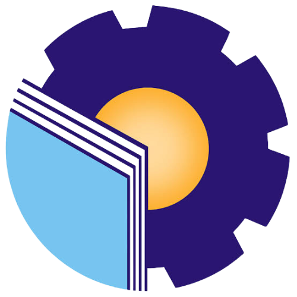
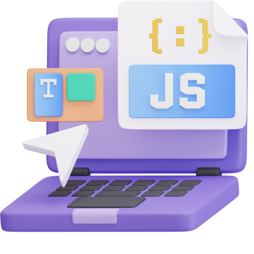
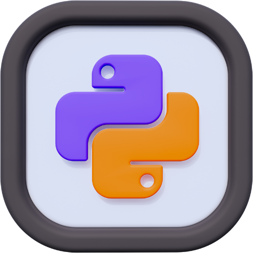
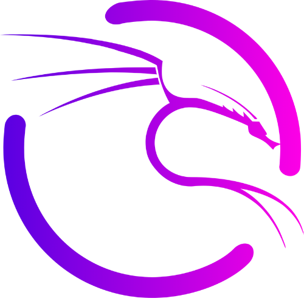

Halo! Nama saya Akbar Maulana, seorang mahasiswa dari jurusan Keamanan Sistem Informasi di Politeknik Negeri Bengkalis.
Saya memiliki minat yang kuat dalam dunia Cyber Security, Web Development, dan UI/UX Design. Bagi saya, teknologi bukan hanya tentang inovasi, tetapi juga tentang keamanan, kepercayaan, dan pengalaman pengguna yang nyaman.
Nama : Akbar Maulana
Status : Mahasiswa Keamanan Sistem Informasi
Motto : "Hidup Santai Sedikit Serius"
Saat ini, saya aktif mempelajari berbagai teknologi seperti HTML, CSS, Python, Javascript, Database dan melakukan eksplorasi tools keamanan seperti Kali Linux, Nmap, serta beberapa tools open-source lainnya.
Saya juga tertarik dalam pengembangan aplikasi web yang aman dan efisien, serta mendalami logika pemrograman melalui proyek-proyek sederhana yang saya kerjakan secara mandiri.
Saya percaya bahwa belajar adalah proses kolaboratif. Jika kamu ingin berdiskusi, belajar bersama, atau bahkan berkolaborasi dalam proyek, jangan ragu untuk menghubungi saya.


